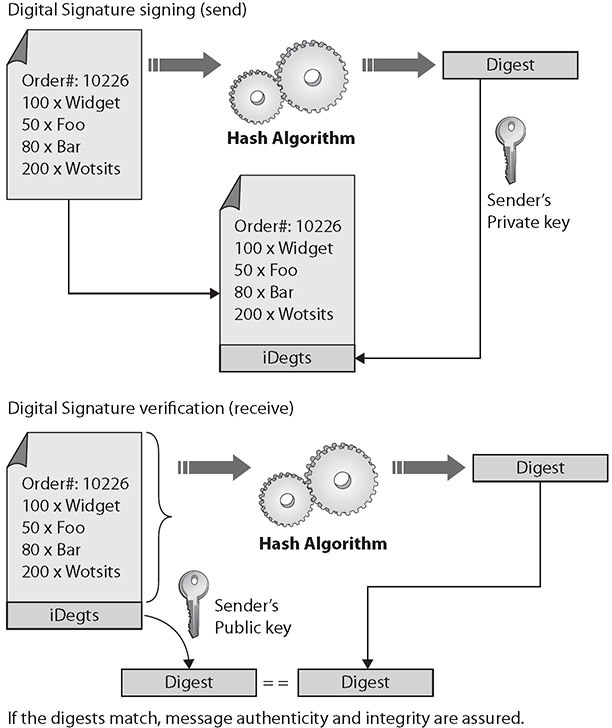
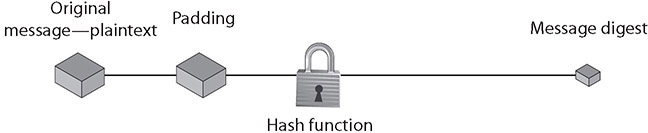
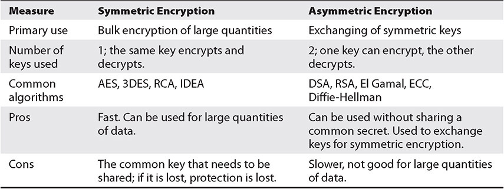

Table of Contents for
CompTIA Security+ All-in-One Exam Guide, Sixth Edition (Exam SY0-601)), 6th Edition
- Cover (01:09 mins)
- Title Page (01:09 mins)
- Copyright Page (03:27 mins)
- Dedication (01:09 mins)
- About the Authors (04:36 mins)
- Contents (19:33 mins)
- Preface (02:18 mins)
- Acknowledgments (01:09 mins)
- Introduction (12:39 mins)
-
Part I Threats, Attacks, and Vulnerabilities (01:09 mins)
- Chapter 1 Social Engineering Techniques (35:39 mins)
- Chapter 2 Type of Attack Indicators (37:57 mins)
- Chapter 3 Application Attack Indicators (33:21 mins)
- Chapter 4 Network Attack Indicators (39:06 mins)
- Chapter 5 Threat Actors, Vectors, and Intelligence Sources (44:51 mins)
- Chapter 6 Vulnerabilities (31:03 mins)
- Chapter 7 Security Assessments (23:00 mins)
- Chapter 8 Penetration Testing (25:18 mins)
-
Part II Architecture and Design (01:09 mins)
- Chapter 9 Enterprise Security Architecture (26:27 mins)
- Chapter 10 Virtualization and Cloud Security (25:18 mins)
- Chapter 11 Secure Application Development, Deployment, and Automation Concepts (27:36 mins)
- Chapter 12 Authentication and Authorization (33:21 mins)
- Chapter 13 Cybersecurity Resilience (39:06 mins)
- Chapter 14 Embedded and Specialized Systems (41:24 mins)
- Chapter 15 Physical Security Controls (49:27 mins)
- Chapter 16 Cryptographic Concepts (42:33 mins)
-
Part III Implementation (01:09 mins)
- Chapter 17 Secure Protocols (20:42 mins)
- Chapter 18 Host and Application Security (46:00 mins)
- Chapter 19 Secure Network Design (67:51 mins)
- Chapter 20 Wireless Security (25:18 mins)
- Chapter 21 Secure Mobile Solutions (43:42 mins)
- Chapter 22 Implementing Cloud Security (24:09 mins)
- Chapter 23 Identity and Account Management Controls (33:21 mins)
- Chapter 24 Implement Authentication and Authorization (37:57 mins)
- Chapter 25 Public Key Infrastructure (55:12 mins)
- Part IV Operations and Incident Response (01:09 mins)
- Part V Governance, Risk, and Compliance (01:09 mins)
- Part VI Appendixes and Glossary (01:09 mins)
- Glossary (65:33 mins)
- Index (67:51 mins)
CHAPTER 16
Cryptographic Concepts
In this chapter, you will
• Identify the different types of cryptography
• Learn about current cryptographic methods
• Understand how cryptography is applied for security
• Given a scenario, utilize general cryptography concepts
• Compare and contrast basic concepts of cryptography
Cryptography is the science of encrypting, or hiding, information—something people have sought to do since they began using language. Although language allowed them to communicate with one another, people in power attempted to hide information by controlling who was taught to read and write. Eventually, more complicated methods of concealing information by shifting letters around to make the text unreadable were developed. These complicated methods are cryptographic algorithms, also known as ciphers. The word cipher comes from the Arabic word sifr, meaning empty or zero.
Certification Objective This chapter covers CompTIA Security+ exam objective 2.8: Summarize the basics of cryptographic concepts.
General Cryptographic Concepts
Historical ciphers were simple to use and also simple to break. Because hiding information continued to be important, more advanced transposition and substitution ciphers were required. As systems and technology became more complex, ciphers were frequently automated by some mechanical or electromechanical device. A famous example of a modern encryption machine is the German Enigma machine from World War II. This machine used a complex series of substitutions to perform encryption, and interestingly enough, it gave rise to extensive research in computers.
When setting up a cryptographic scheme, it is important to use proven technologies. Proven cryptographic libraries and cryptographically correct random number generators are the foundational elements associated with a solid program. Homegrown or custom elements in these areas can greatly increase risk associated with a broken system. Developing your own cryptographic algorithms is beyond the abilities of most groups. Algorithms are complex and difficult to create. Any algorithm that has not had public review can have weaknesses. Most good algorithms are approved for use only after a lengthy test and public review phase.
When material, called plaintext, needs to be protected from unauthorized interception or alteration, it is encrypted into ciphertext. This is done using an algorithm and a key, and the rise of digital computers has provided a wide array of algorithms and increasingly complex keys. The choice of specific algorithm depends on several factors, which will be examined in this chapter.

NOTE This chapter introduces many names, acronyms, and details that all work together to define cryptographic basics. The layout of the chapter is aligned with the Security+ objective, which makes lookup easier, but it means some terms will be described later in the chapter. You are advised to do a quick read through the chapter to learn where everything is and then read it again for content, knowing where topics are if you need to look them up.
Fundamental Methods
Modern cryptographic operations are performed using both an algorithm and a key. The choice of algorithm depends on the type of cryptographic operation that is desired. The subsequent choice of key is then tied to the specific algorithm. Cryptographic operations include encryption for the protection of confidentiality, hashing for the protection of integrity, digital signatures to manage nonrepudiation, and a bevy of specialty operations such as key exchanges.
While the mathematical specifics of these operations can be very complex and are beyond the scope of this level of material, the knowledge to properly employ them is not complex and is subject to being tested on the CompTIA Security+ exam. Encryption operations are characterized by the quantity and type of data, as well as the level and type of protection sought. Integrity protection operations are characterized by the level of assurance desired. Data is characterized by its usage: data in transit, data at rest, or data in use. It is also characterized in how it can be used, either in block form or stream form, as described next.

EXAM TIP The terms data in transit, data at rest, and data in use are industry-standard terms. In the Security+ objectives, such as 2.1 under “Data protection,” slightly different terms are used. Security+ uses at rest, in transit/motion, and in processing. It is important to recognize and use the exam-specific terms on the exam.
Digital Signatures
A digital signature is a cryptographic implementation designed to demonstrate authenticity and identity associated with a message. Using public key cryptography, a digital signature allows traceability to the person signing the message through the use of their private key. The addition of hash codes allows for the assurance of integrity of the message as well. The operation of a digital signature is a combination of cryptographic elements to achieve a desired outcome. The steps involved in digital signature generation and use are illustrated in Figure 16-1. The message to be signed is hashed, and the hash is encrypted using the sender’s private key. Upon receipt, the recipient can decrypt the hash using the sender’s public key. If a subsequent hashing of the message reveals an identical value, two things are known: First, the message has not been altered. Second, the sender possessed the private key of the named sender and is therefore presumably the same person.

Figure 16-1 Digital signature operation
A digital signature does not by itself protect the contents of the message from interception. The message is still sent in the clear, so if confidentiality of the message is a requirement, additional steps must be taken to secure the message from eavesdropping. This can be done by encrypting the message itself, or by encrypting the channel over which it is transmitted.
EXAM TIP Know that a digital signature guarantees that the contents of a message have not been altered while in transit.
Key Length
The strength of a cryptographic function typically depends upon the strength of a key, where a larger key has more entropy and adds more strength to the encryption. Because different algorithms use different methods with a key, direct comparison of key strength between different algorithms is not easily done. Some cryptographic systems have fixed key lengths, such as Triple Digital Encryption Standard (3DES), while others, such as Advanced Encryption Standard (AES), have multiple lengths (for example, AES-128, AES-192, and AES-256).
Some algorithms offer choices in key lengths: as a general rule, a longer key length is more secure, but also will take longer to compute. With regard to finding the right balance between security and usability, here are some recommended minimum key lengths:
• Symmetric key lengths of at least 80 to 112 bits.
• Elliptic curve key lengths of at least 160 to 224 bits.
• RSA key lengths of at least 2048 bits. In particular, the CA/Browser Forum Extended Validation (EV) Guidelines require a minimum key length of 2048 bits.
• DSA key lengths of at least 2048 bits.
NOTE Cryptography is a discipline filled with acronyms; they are used for algorithms, methods, and processes. This may seem intimidating, but after a couple passes through the chapter, they will become more familiar to you.
Key Stretching
Key stretching is a mechanism that takes what would be weak keys and “stretches” them to make the system more secure against brute-force attacks. As computers have gained computational power, hash functions can be computed very quickly, leading to a need for a manner of increasing the workload when computing hashes; otherwise, an attacker can merely compute them all. In the case of a short key, the chance of randomly matching the hash function by use of computational guessing attacks has increased. To make matching the hash more difficult, one must increase the keyspace or slow down the computation. Key stretching involves increasing the computational complexity by adding iterative rounds of computations—rounds that cannot be done in parallel. When one wants to use a brute-force attack, the increase in computational workload becomes significant when done billions of times, making this form of attack much more expensive.
Salting
To provide sufficient entropy for low-entropy inputs to hash functions, a high-entropy piece of data can be concatenated with the material being hashed. The term salt refers to this initial data piece. Salts are particularly useful when the material being hashed is short and low in entropy. The addition of a high-entropy (say, a 30-character) salt to a three-character password greatly increases the entropy of the stored hash.
NOTE Entropy is an important term in cryptography; it refers to the level of randomness. Entropy will be covered in greater detail later in the chapter.
Another term used in this regard is initialization vector, or IV, and this is used in several ciphers, particularly in the wireless space, to achieve randomness, even with normally deterministic inputs. IVs can add randomness and are used in block ciphers to initiate modes of operation.
NOTE Initialization vectors will be covered in more detail in Chapter 4, “Network Attack Indicators.” A nonce is a number used only once, and is similar to a salt, or an IV. However, because it is only used once, if it is needed again, a different value is used. Nonces provide random nondeterministic entropy into cryptographic functions and are commonly used in stream ciphers to break stateful properties when the key is reused.
Hashing
Hashing functions are commonly used encryption methods. A hashing function is a special mathematical function that performs one-way encryption, which means that once the algorithm is processed, there is no feasible way to use the ciphertext to retrieve the plaintext that was used to generate it. Also, ideally, there is no feasible way to generate two different plaintexts that compute to the same hash value. Figure 16-2 shows a generic hashing process.

Figure 16-2 How hashes work
Common uses of hashing algorithms are to store computer passwords and to ensure message integrity. The idea is that hashing can produce a unique value that corresponds to the data entered, but the hash value is also reproducible by anyone else running the same algorithm against the data. So you could hash a message to get a message authentication code (MAC), and the computational number of the message would show that no intermediary has modified the message. This process works because hashing methods are typically public, and anyone can hash data using the specified method. It is computationally simple to generate the hash, so it is simple to check the validity or integrity of something by matching the given hash to one that is locally generated. HMAC, or Hash-based Message Authentication Code, is a special subset of hashing technology. It is a hash algorithm applied to a message to make a MAC, but it is done with a previously shared secret. So, the HMAC can provide integrity simultaneously with authentication.
A hash algorithm can be compromised with what is called a collision attack, in which an attacker finds two different messages that hash to the same value. This type of attack is very difficult and requires generating a separate algorithm that will attempt to find a text that will hash to the same value of a known hash. This must occur faster than simply editing characters until you hash to the same value, which is a type of brute-force attack. The consequence of a hash function that suffers from collisions is that integrity is lost. If an attacker can make two different inputs purposefully hash to the same value, she might trick people into running malicious code and cause other problems. Popular hash algorithms are the Secure Hash Algorithm (SHA) series, the RIPEMD algorithms, and the Message Digest (MD) hash of varying versions (MD2, MD4, and MD5).
EXAM TIP Remember that a hash function is a special mathematical function that performs one-way encryption.
Hashing functions are very common, and they play an important role in the way information, such as passwords, is stored securely and the way in which messages can be signed. By computing a digest of the message, less data needs to be signed by the more complex asymmetric encryption, and this still maintains assurances about message integrity. This is the primary purpose for which the protocols were designed, and their success will allow greater trust in electronic protocols and digital signatures.
Key Exchange
Cryptographic mechanisms use both an algorithm and a key, with the key requiring communication between parties. In symmetric encryption, the secrecy depends on the secrecy of the key, so insecure transport of the key can lead to failure to protect the information encrypted using the key. Key exchange is the central foundational element of a secure symmetric encryption system. Maintaining the secrecy of the symmetric key is the basis of secret communications. In asymmetric systems, the key exchange problem is one of key publication. Because public keys are designed to be shared, the problem is reversed from one of secrecy to one of publicity.
EXAM TIP With symmetric encryption the message to be protected is encrypted and decrypted using the same secret key. Asymmetric encryption uses two separate keys to encrypt and decrypt the message.
Early key exchanges were performed by trusted couriers. People carried the keys from senders to receivers. One could consider this form of key exchange to be the ultimate in out-of-band communication. With the advent of digital methods and some mathematical algorithms, it is possible to pass keys in a secure fashion. This can occur even when all packets are subject to interception. The Diffie-Hellman key exchange is one example of this type of secure key exchange. The Diffie-Hellman key exchange depends on two random numbers, each chosen by one of the parties and kept secret. Diffie-Hellman key exchanges can be performed in-band, and even under external observation, as the secret random numbers are never exposed to outside parties.
Elliptic Curve Cryptography
Elliptic curve cryptography (ECC) works on the basis of elliptic curves. An elliptic curve is a simple function that is drawn as a gently looping curve on the X,Y plane. Elliptic curves are defined by this equation:
y2 = x3 + ax2 + b
Elliptic curves work because they have a special property—you can add two points on the curve together and get a third point on the curve.
For cryptography, the elliptic curve works as a public key algorithm. Users agree on an elliptic curve and a fixed curve point. This information is not a shared secret, and these points can be made public without compromising the security of the system. The security of elliptic curve systems has been questioned, mostly because of lack of analysis. However, all public key systems rely on the difficulty of certain math problems. It would take a breakthrough in math for any of the mentioned systems to be weakened dramatically, but research has been done about the problems and has shown that the elliptic curve problem has been more resistant to incremental advances. Again, as with all cryptography algorithms, only time will tell how secure ECC implementations really are.
The big benefit of ECC systems is that they require less computing power for a given bit strength. This makes ECC ideal for use in low-power mobile devices. The surge in mobile connectivity has brought secure voice, e-mail, and text applications that use ECC and AES algorithms to protect a user’s data.
EXAM TIP Elliptic curve cryptography can be used in several ways, including in a key exchange and a digital signature. Security+ has three acronyms you need to know in this area: ECC for elliptic curve cryptography, ECDHE for Elliptic Curve Diffie-Helman Ephemeral, and ECDSA for Elliptic Curve Digital Signatures Algorithm. It is important to have a working knowledge of the terms in the Security+ glossary.
Perfect Forward Secrecy
Perfect forward secrecy (PFS) is a property of a public key system in which a key derived from another key is not compromised, even if the originating key is compromised in the future. This is especially important in session key generation, where future communication sessions may become compromised; if perfect forward secrecy were not in place, then past messages that had been recorded could be decrypted.
Quantum Cryptography
Quantum cryptography is the use of quantum computing hardware to perform encryption and decryption processes. Quantum hardware is still in its early stages of development, and the immense computing power in these platforms will revolutionize cryptography. Most of the issues associated with quantum cryptography are still theoretical, as machines with sufficient power and programmability have yet to be constructed. But, like all technology races, when the ability to hack encryption with quantum machines arrive, new methods of encrypting using the same types of hardware will restore the balance between encryption strength and the ability to hack it.
Quantum principles have already been deployed into communication-related key exchanges through quantum key distribution (QKD). QKD does not actually encrypt communication but rather provides a means for users to securely distribute keys that are used for encrypting the communication channel.
NOTE Quantum computing will make changes in both computing and communications. In computing, quantum methods promise solutions to currently unsolvable problems. In communications, quantum methods offer new means of security, including key distribution, which is already available via quantum key distribution.
Quantum computing is one of the frontiers of computing and involves the creation of a whole new type of computer. Quantum computers use a new structure called qubits, which allow information to be represented differently than just “on” or “off” as binary bits do. In a fashion, qubits enable multiple paths of a problem to be computed simultaneously. Quantum computing is more than just hardware; it involves new forms of software, and there is significant development in this area as well. Recently, scientists have claimed to surpass conventional computing power with a quantum machine, but before you get all excited, this was not a general-purpose machine, but one dedicated to solving only a single, specific problem. In spite of all of the current limitations, quantum computing will bring significant breakthroughs in computing in the future.
Post-Quantum Era
As quantum computing presents a challenge for many of today’s cryptographic algorithms, significantly reducing their strength, there is a movement to develop algorithms that are not easily solved via quantum methods. This is not a theoretical exercise, as government agencies and others have been working on practical solutions to have answers and substitute algorithms should any existing algorithm fail, whether by quantum computing or other problem.
There are currently several cryptographic algorithms that have been developed in response to quantum methods and are believed to be resistant to quantum computing–based decryption methods to a reasonable level. These methods use different mathematical properties, making simultaneous solution sets not as effective, thus limiting the power of quantum computing in solving this type of problem. As with all systems, there are trade-offs, and in this case the newer methods tend to use longer keys and require more computational power to employ.
Ephemeral Keys
Ephemeral keys are cryptographic keys that are used only once after generation. When an ephemeral key is used as part of the Diffie-Hellman scheme, it forms an Ephemeral Diffie-Hellman (EDH) key exchange. An EDH generates a temporary key for each connection, never using the same key twice. This provides for perfect forward secrecy. If this is constructed using an elliptic curve algorithm, it would be ECDHE, for Elliptic Curve Diffie-Helman Ephemeral, as mentioned previously.
EXAM TIP Ephemeral keys are cryptographic keys that are used only once after generation.
Modes of Operation
In symmetric or block algorithms, there is a need to deal with multiple blocks of identical data to prevent multiple blocks of cyphertext that would identify the blocks of identical input data. There are multiple methods of dealing with this, called modes of operation. The basic premise is to use some source of entropy before encrypting subsequent blocks so that identical blocks of plaintext produce differing blocks of ciphertext. These modes can be broken into three groups: authenticated, unauthenticated, and counter.
Authenticated
Authenticated encryption with associated data (AEAD) is a form of encryption designed to provide both confidentiality and authenticity services. A wide range of authenticated modes is available for developers, including GCM, OCB, and EAX.
NOTE Why do you need authenticated encryption? To protect against chosen ciphertext attacks such as POODLE, you need a second layer using a MAC implementation such as HMAC-SHA. This is done using the following steps:
• Compute the MAC on the ciphertext, not the plaintext.
• Use different keys: one for encryption and a different one for the MAC.
This specific, yet generic prescription adds steps and complications for developers. To resolve this, special modes for block ciphers called authenticated encryption (AE) and authenticated encryption with associated data (AEAD) were devised. These provide the same protection as the block cipher/MAC combination, but in a single function with a single key. AE(AD) modes were developed to make solutions easier for implementations, but adoption has been slow.
OCB is Offset Codebook Mode, a patented implementation that offers the highest performance, but because of patents, it’s not included in any international standards. EAX solves the patent problem, but likewise has not been adopted by any international standards. This leaves GCM (Galois Counter Mode), which is described in the next section.
Counter
Counter mode (CTM) uses a “counter” function to generate a nonce that is used for each block encryption. Different blocks have different nonces, enabling parallelization of processing and substantial speed improvements. The sequence of operations is to take the counter function value (nonce), encrypt it using the key, then XOR it with plaintext. Each block can be done independently, resulting in the ability to multithread the processing. Note that CTM is also abbreviated as CTR in some circles.
CCM is a mode of operation involving CBC (cipher block chaining, described in the next section) with a MAC, or CBC-MAC. This method was designed for block ciphers with a length of 128 bits, where the length of the message and any associated data must be known in advance. This means it is not an “online” form of AEAD, which is characterized as allowing any length of input.
Galois Counter Mode (GCM) is an extension of CTM in that there’s an addition of a Galois mode of authentication. This adds an authentication function to the cipher mode, and the Galois field used in the process can be parallelized, providing efficient operations. GCM is employed in many international standards, including IEEE 802.1ad and 802.1AE. NIST has recognized AES-GCM as well as GCM and GMAC. AES GCM cipher suites for TLS are described in IETF RFC 5288.
Unauthenticated
Unauthenticated modes use a non-identity-based source for the entropy element for subsequent blocks. In cipher block chaining (CBC), each block is XORed with the previous ciphertext block before being encrypted. To obfuscate the first block, an initialization vector (IV) is XORed with the first block before encryption. CBC is one of the most common modes used, but it has two major weaknesses. First, because there is a dependence on previous blocks, the algorithm cannot be parallelized for speed and efficiency. Second, because of the nature of the chaining, a plaintext block can be recovered from two adjacent blocks of ciphertext. An example of this is in the POODLE (Padding Oracle On Downgraded Legacy Encryption) attack on TLS. This type of padding attack works because a one-bit change to the ciphertext causes complete corruption of the corresponding block of plaintext and inverts the corresponding bit in the following block of plaintext, but the rest of the blocks remain intact.
Blockchain
Blockchains are lists of records, where each addition to the list is done by a cryptographic algorithm. While this may seem complex, it serves an important purpose: records in a blockchain are resistant to modification. This permits a distributed ledger that can record transactions and have both verification of additions and protection with respect to integrity. The strength of the integrity comes from both the signing of records and the distributed nature of the blockchain. While a record can be altered, it would require all records after it to also be altered, and thus would be detectable across the copies on the distributed storage of the chain. So, while records are technically alterable, in practicality the system is provably secure.
The concept of blockchains was invented to create the public transaction ledger of cryptocurrencies. A cryptocurrency is a currency system built on a finite set of “rare” numbers that are mined and then “created.” As there is no central authority, numbers when mined are entered into the distributed ledger, marking their creation. All transactions are also entered into the ledger, preventing double-spending of the tokens. The use of the distributed public ledger provides the protections that physical tokens provide—only one person can control a given currency token at any given time, and all transactions are immutable.
NOTE While cryptocurrencies such as Bitcoin get the headlines, the true winner in blockchain technology has been the implementation of distributed public ledgers. Public ledgers have been used to resolve many challenging problems in tracking financial transactions, supply chains, and other ledger-based issues. Application for items such as music royalties, DNS systems, and tracking food from farm to table are all examples of blockchain technology solutions under development.
EXAM TIP Blockchain is the recordkeeping technology behind Bitcoin. It is a distributed and decentralized public record.
Cipher Suites
The term cipher suite refers to a set of algorithms used together in cryptography, with the most famous being the TLS cipher suite (see https://www.iana.org/assignments/tls-parameters/tls-parameters.xhtml). These combinations are predetermined to facilitate ease of application via TLS connection; rather than having to specify and agree on each parameter, a single number can represent a complete cipher set. The cipher suite will list the key exchange mechanism, the authentication protocol, the block/stream cipher, and message authentication.
Block
Block ciphers operate on input data in a series of blocks. In the TLS cipher suite, in TLS 1.2, several block ciphers are available, including AES, 3DES, and IDEA. With the introduction of TLS 1.3, this list is substantially trimmed to only ciphers that can support AEAD operations. This removes the CBC versions of AES. The implementation of AEAD schemes closes a series of potential loopholes that had been attacked in the past.
Stream
Stream ciphers operate on streams of data instead of blocks. Stream operations typically take place on a single byte at a time, using an XOR function and a pseudorandom key. The challenge is to produce a long pseudorandom string of bytes that can be used to both encrypt and decrypt the stream. Specific stream algorithms, such as A5 and RC4, have been used for years, but weaknesses have led to newer algorithms such as ChaCha20 and the use of AES-GCM in a key stream mode.
EXAM TIP A block cipher encrypts plaintext one block at a time. A stream cipher encrypts one byte at a time.
Symmetric vs. Asymmetric
Both symmetric and asymmetric encryption methods have their advantages and disadvantages. Symmetric encryption tends to be faster, is less computationally involved, and is better for bulk transfers. But it suffers from a key management problem in that keys must be protected from unauthorized parties. Asymmetric methods resolve the key secrecy issue with public keys, but they add significant computational complexity, which makes them less suited for bulk encryption.
Bulk encryption can be done using the best of both systems, by using asymmetric encryption to pass a symmetric key. By adding in ephemeral key exchange, you can achieve perfect forward secrecy, discussed earlier in the chapter. Digital signatures, a highly useful tool, are not practical without asymmetric methods. Table 16-1 compares symmetric and asymmetric methods.

Table 16-1 Comparison of Symmetric and Asymmetric Encryption
EXAM TIP Know the differences between symmetric and asymmetric encryption. Symmetric uses one key, and it is faster but less secure. Asymmetric uses two keys, and it is slower but more secure.
It is common for symmetric and asymmetric encryption to be used together. For instance, when you go to a website that is TLS protected (HTTPS), you need to exchange a symmetric key with the web server to protect the communication channel. This is done via asymmetric encryption methods, as they can create a secure key exchange between parties without the need for a predetermined common secret. This is used to exchange the symmetric key that then is used to encrypt and decrypt data, securing the communication channel. Another common joint usage of cryptographic elements is in digital signatures. Asymmetric encryption elements provide authentication services (that is, proof of who a sender is and nonrepudiation). The key, being small, is handled by asymmetric methods. The message, being large, is handled by the symmetric key and symmetric method, which is suited for bulk encryption. Understanding the differences and use of each type, including hashing, is important both for the exam and in the practice of security.
Lightweight Cryptography
In a world where computing devices gain power with every iteration of the CPU, it is hard to imagine the need for less compute-intensive cryptography. Enter the world of the Internet of Things (IoT), where small, portable, energy- and compute-resource-constrained devices abound. These devices are small, cheap, and number in the hundreds of millions to billions. They have a need to communicate securely and manage functions such as authentication. Lightweight cryptography is a specialized suite of cryptographic algorithms designed to operate in this resource-constrained environment.
Entire suites of lightweight algorithms designed for 8-bit processors have been developed, including hash functions, block and stream ciphers, and even asymmetric and signing functions. NIST has driven significant research in recent years, and an ISO/IEC standard series, ISO/IEC 29192, covers the methods and details.
Steganography
Steganography, an offshoot of cryptography technology, gets its meaning from the Greek word steganos, meaning covered. Invisible ink placed on a document and hidden by innocuous text is an example of a steganographic message. Another example is a tattoo placed on the top of a person’s head, visible only when the person’s hair is shaved off.
Hidden writing in the computer age relies on a program to hide data inside other data. The most common application is the concealing of a text message in a picture file. The Internet contains multiple billions of image files, allowing a hidden message to be located almost anywhere without being discovered. The nature of the image files also makes a hidden message difficult to detect. While it is most common to hide messages inside images, they can also be hidden in video and audio files.
The advantage to steganography over cryptography is that the messages do not attract attention, and this difficulty in detecting the hidden message provides an additional barrier to analysis. The data that is hidden in a steganographic message is frequently also encrypted, so should it be discovered, the message will remain secure. Steganography has many uses, but the most publicized uses are to hide illegal material, often pornography, or allegedly for covert communication by terrorist networks. While there is no direct evidence to support that terrorists use steganography, the techniques have been documented in some of their training materials.
Steganographic encoding can be used in many ways and through many different media. Covering them all is beyond the scope of this book, but we will discuss one of the most common ways to encode into an image file: LSB encoding. LSB, which stands for least significant bit, is a method of encoding information into an image while altering the actual visual image as little as possible. A computer image is made up of thousands or millions of pixels, all defined by 1s and 0s. If an image is composed of RGB (Red Green Blue) values, each pixel has an RGB value represented numerically from 0 to 255. For example, 0,0,0 is black, and 255,255,255 is white, which can also be represented as 00000000, 00000000, 00000000 for black and 11111111, 11111111, 11111111 for white. Given a white pixel, editing the least significant bit of the pixel to 11111110, 11111110, 11111110 changes the color. The change in color is undetectable to the human eye, but in an image with a million pixels, this creates a 125KB area in which to store a message.
Hidden content can be embedded in virtually any encoded data stream, where coding is used to represent the digital version of an image, an audio stream, or a video stream. Encoding the hidden information in aspects of the actual signal in a manner that unnoticeably alters the fidelity of the original signal is what provides the covert channel. To better protect the data from analysis, an encryption pass is made on the covert data, making the covert data to be embedded look like noise, which further protects the channel from simple discovery.
Homomorphic Encryption
One of the primary purposes of cryptography is to prevent unauthorized access to data. This is important for data at rest and data in transit, but it can be an issue for data in use. Data that is encrypted while stored or being moved is protected from observation or alteration by unauthorized parties. But this also forces authorized parties to perform decryption steps before performing computations, followed by additional re-encryption steps after computations, which represents a significant penalty for use. Enter the world of homomorphic encryption. Homomorphic encryption is a set of algorithms that allows operations to be conducted on encrypted data, without decrypting and re-encrypting. The concept is simple: create a system that allows operations on ciphertext that, when decrypted, will have the same result as if the operation was performed on plaintext.
Most of the operations associated with homomorphic-encrypted data involve work on numbers—specifically integers in the form of addition. While this may seem to be a limitation, it is a huge advance, as much of the data that is “changed” in systems is in fact numbers, or values in databases. What’s more, if the number can be added to, then with multiple rounds of addition, multiplication can be achieved, and by using negative numbers, subtraction can be achieved. This makes the use of homomorphic methods valuable for many transactional-based systems.
Common Use Cases
Cryptographic services are being employed in more and more systems, and many common use cases are associated with them. Examples include implementations to support situations such as low power, low latency, and high resiliency, as well as supporting functions such as confidentiality, integrity, and nonrepudiation.
Low-Power Devices
Low-power devices, such as mobile phones and portable electronics, are commonplace, and these devices have needs for cryptographic functions. Cryptographic functions tend to take significant computational power, and special cryptographic functions, such as elliptic curve cryptography, are well suited for low-power applications.
Low-Latency Operations
Some use cases involve low-latency operations, which makes specialized cryptographic functions needed to support operations that have extreme time constraints. Stream ciphers are examples of low-latency operations.
High-Resiliency Systems
High-resiliency systems are characterized by functions that have the ability to resume normal operational conditions after an external disruption. The use of cryptographic modules can support resiliency through a standardized implementation of cryptographic flexibility.
Support for Confidentiality
Protecting data from unauthorized reading is the definition of confidentiality. Cryptography is the primary means of protecting data confidentiality—at rest, in transit, and in use.
Support for Integrity
Times arise when the integrity of data is needed (for instance, during transfers). Integrity can demonstrate that data has not been altered. Message authentication codes (MACs) supported by hash functions are an example of cryptographic services supporting integrity.
Support for Obfuscation
There are times when information needs to be obfuscated—that is, protected from causal observation. In the case of a program, obfuscation can protect the code from observation by unauthorized parties.
Supporting Authentication
Authentication is a property that deals with the identity of a party—be it a user, a program, or a piece of hardware. Cryptographic functions can be employed to demonstrate authentication, such as the validation that an entity has a specific private key associated with a presented public key, thus proving identity.
Support for Nonrepudiation
Nonrepudiation is a property that deals with the ability to verify that a message has been sent and received so that the sender (or receiver) cannot refute sending (or receiving) the information. An example of this in action is seen with the private key holder relationship. It is assumed that the private key never leaves the possession of the private key holder. Should this occur, it is the responsibility of the holder to revoke the key. Thus, if the private key is used, as evidenced by the success of the public key, then it is assumed that the message was sent by the private key holder. Thus, actions that are signed cannot be repudiated by the holder.
EXAM TIP Remember that nonrepudiation is the ability to verify that a message has been sent and received so that the sender (or receiver) cannot refute sending (or receiving) the information.
EXAM TIP Understanding the different common use cases and being able to identify the applicable use case given a scenario is a testable element associated with this section’s objective.
Limitations
When you’re examining the options for implementing cryptographic solutions, a wide range of constraints or limitations can become an issue. How much processing power, how much data, and what form of data (block or stream) are all important to consider. Also important to consider is how these choices impact or limit the effectiveness of your solution, such as how long your solution can protect data. There are several key issues to understand, such as speed, size, weak key implications, and more. These are described in the following sections.
Speed
Encryption and decryption speed can be an issue with various forms of communication. The more complex the algorithm, the more rounds that are performed and the stronger the encryption, but the slower the throughput. Computational efficiency is an important benchmark in modern cryptography and has led to algorithms such as ChaCha20 gaining favor, as it has a significant speed advantage over AES.
Size
In cryptography, size does matter, and this is related to key size. The bigger the key, the more data that can be throughput and the stronger the encryption. Size comes with a trade-off: speed. Longer keys take longer to generate, and the more rounds a system operates, the longer the time to encrypt/decrypt. So size is a means of approximating strength, at a cost of speed. This trade-off is a major consideration in developing algorithms for practical implementation.
Weak Keys
Cryptographic strength is a function of the algorithm strength and the strength of the key. As mentioned earlier, key length can be an important element in the strength of a cryptographic solution. But there is also the issue of weak keys, or keys that, despite length, for a given algorithm result in weaker encryption.
For some algorithms there are cases of key values that result in weaker encryption. A key value of all zeros, or all ones, is just another key value in the set of all possible values, but numbers such as these or those with patterns may cause weaknesses. A perfect algorithm would have no weak key values, but not all algorithms share this desired trait. Currently DES, RC4, IDEA, Blowfish, and GMAC algorithms can suffer from weak keys. Understanding the issue and eliminating the use of weak keys as part of the implementation of a specific algorithm is an important safeguard.
Time
Nothing lasts forever, even in cryptography. Given enough time, any encryption can be broken—one must simply try all the keys. This is referred to as a brute-force attack. So the objective of cryptography is to protect data for a long-enough period that brute-force decryption is not a factor in the security equation. With modern encryption algorithms such as AES, and conventional (non-quantum) computing, the time to brute force the problem is beyond human life spans, so the systems are considered secure. Older methods, such as DES, have proven to no longer provide long protection times due to modern computing speeds.
Longevity
The longevity of an encryption scheme must be measured not in today’s computing ability, but in light of the increases in computing abilities over the expected protection time desired by the encryption. If we want to protect materials for the next 25 years, we need to consider what computing power will be available in the next 25 years—a challenge given advances in quantum computing. While we can accurately predict the raw computing power of current computing platforms for decades, new methods such as quantum computing call these predictions into question. This has led the drive behind government agencies working on next-generation encryption schemes that will be resistant to quantum computing efforts.
Predictability
The key element that makes cryptographic functions strong is a randomness function that eliminates any form of predictability. The use of cryptographic random numbers is important, as it removes the predictability problem of pseudorandom number generators. Computers will perform operations in a reproducible manner: given the same inputs, you get the same outputs. When it comes to creating random numbers, the sequence of random numbers produced by an algorithm will typically be reproducible, and while it may look random, statistically speaking, it really isn’t because knowing one of the numbers will enable you to know later numbers in the sequence. This makes the use of a cryptographical random number generator crucial to the success of cryptographic solutions, as it removes the element of predictability.
Reuse
Reusing cryptographic keys is a sure way to result in failure. The more material that an attacker can get using the same key, the greater his ability to use cryptanalysis tools to break the scheme. This is how the Enigma and Purple machines failed during WWII. There are several built-in mechanisms to help prevent these problems. In block encryption, introducing a variable element of data between identical blocks prevents simple cryptanalysis. One name for this is an initialization vector (IV), which is a structural method of introducing randomness. It is important to use a long IV value so it doesn’t repeat, as the repeated use of the IV over a series of messages was the primary cause of the failure of WEP. The use of ephemeral keys is another example of preventing reuse of a cryptographic element as ephemeral keys are used only once.
Entropy
The level or amount of randomness is referred to as entropy. Entropy is the measure of uncertainty associated with a series of values. Perfect entropy equates to complete randomness, such that given any string of bits, there is no computation to improve guessing the next bit in the sequence. A simple “measure” of entropy is in bits, where the bits are the power of 2, which represents the number of choices. Therefore, 2048 options would represent 11 bits of entropy. In this fashion, one can calculate the entropy of passwords and measure how “hard” they are to guess. There are specific mathematical formulas that can estimate entropy, and these provide a means of measuring the true randomness associated with a digital item.
EXAM TIP A lack of good entropy may leave a cryptosystem vulnerable and unable to securely encrypt data.
Computational Overhead
Different algorithms have differing means of computing the complexity that makes cryptographic solutions secure. One of the limitations of a cryptographic system is the level of computational overhead needed to generate the system. This concept has driven systems such as elliptic curve cryptographic systems, where the computations are based on addition, as opposed to RSA systems, which are based on large-number multiplication. As with all trade-offs, there are different advantages to each system, so they are not universally interchangeable, and computational overhead is one of many factors that must be considered when developing a solution.
Resource vs. Security Constraints
When using cryptography for protection of data, several factors need to be included in the implementation plan. One of the first decisions is in algorithm selection. Not only should you avoid deprecated algorithms, but you also need to match the algorithm to the intended use. This includes things like the resources available—is it an embedded system with low computing power or a server with dedicated cryptographic hardware? How much protection is needed? What is the data throughput rate? All of these factors need to be considered when weighing the selection of cryptographic solutions, as resources are seldom unlimited and security considerations can greatly vary.
Weak/Deprecated Algorithms
Over time, cryptographic algorithms fall to different attacks or just the raw power of computation. The challenge with these algorithms is understanding which ones have fallen to attacks and may yet still be available for use in software libraries, resulting in their inappropriate application in use. Although this list will continue to grow, it is important to consider this topic, because old habits die hard. The use of hash algorithms such as MD5 should be considered inappropriate, as manufactured collisions have been achieved. Even newer hash functions, such as SHA-1 and SHA-256, have issues because they are suspect to forced collisions. The Data Encryption Standard (DES), and its commonly used stronger form 3DES, have fallen from favor. The good news is that new forms of these functions are widely available, and in many cases, such as with AES and ChaCha20, they are computationally efficient, providing better performance.
EXAM TIP Understanding the different limitations of cryptographic solutions and being able to identify the implications given a use case scenario is a testable element associated with this section’s objective.
Chapter Review
In this chapter, you became acquainted with the basics of cryptography. The chapter opened with a discussion of cryptographic concepts, followed by an examination of the topics of digital signatures, key length, key stretching, salting, hashing, key exchange, elliptic curve cryptography, perfect forward secrecy, quantum computing, and the post-quantum era. The chapter continued with the concepts of ephemeral elements, modes of operation for block ciphers, blockchains, and cipher suites. An examination of symmetric vs. asymmetric schemes, lightweight cryptography, steganography, and homomorphic encryption was presented. The chapter concluded with topics associated with common use cases and the limitations of cryptographic systems.
Questions
To help you prepare further for the CompTIA Security+ exam, and to test your level of preparedness, answer the following questions and then check your answers against the correct answers at the end of the chapter.
1. If you need to perform operations such as addition on encrypted elements, what type of encryption scheme would you use?
A. Asymmetric
B. Homomorphic
C. Stream
D. Lightweight
2. Which of the following is not a limitation associated with cryptographic solutions?
A. Speed
B. Computational overhead
C. Longevity
D. Entropy
3. What set of algorithms is designed for low-power devices such as the Internet of Things and embedded systems?
A. Lightweight
B. Hashing
C. Stream
D. Blockchain
4. How do you make a short secret, such as a password, become long enough for use?
A. Salting
B. Key elongation
C. Key stretching
D. Ephemeral operations
5. What is the best way to get the plaintext from a hash value?
A. Use linear cryptanalysis.
B. Use a reverse hash function.
C. You cannot get the plaintext out of a hash value.
D. Use an ephemeral key.
6. What does a salt provide?
A. It tells the algorithm how many digits of primes to use.
B. It primes the algorithm by giving it initial noncritical data.
C. It adds additional rounds to the cipher.
D. It provides additional entropy.
7. What makes a digitally signed message different from an encrypted message?
A. The digitally signed message has encryption protections for integrity and nonrepudiation.
B. The digitally signed message uses much stronger encryption and is harder to break.
C. The encrypted message only uses symmetric encryption.
D. There is no difference.
8. Steganography is commonly accomplished using which method?
A. Encryption
B. Initialization vectors (IVs)
C. LSB encoding
D. Entropy substitution
9. To prevent the loss of a single message due to accidental decryption from affecting other encrypted messages, which of the following properties is needed?
A. Stream encryption
B. Perfect forward secrecy
C. Entropy
D. Obfuscation
10. Given a large quantity of data in the form of a streaming video file, what is the best type of encryption method to protect the content from unauthorized live viewing?
A. Symmetric block
B. Hashing algorithm
C. Stream cipher
D. Asymmetric block
Answers
1. B. Homomorphic schemes allow computations on encrypted elements.
2. D. Entropy is a measure of randomness, not a limitation of a cryptographic solution.
3. A. Lightweight encryption algorithms are designed for resource-constrained systems.
4. C. Key stretching is a mechanism that takes what would be weak keys and “stretches” them to make the system more secure.
5. C. Hash ciphers are designed to reduce the plaintext to a small value and are built to not allow extraction of the plaintext. This is why they are commonly called “one-way” functions.
6. D. The salt adds additional entropy, or randomness, to the encryption key, specifically providing separation between equal inputs such as identical passwords on different accounts.
7. A. The digital signature includes a hash of the message to supply message integrity and uses asymmetric encryption to demonstrate nonrepudiation (the fact that the sender’s private key was used to sign the message).
8. C. LSB, or least significant bit, is designed to place the encoding into the image in the least significant way to avoid altering the image.
9. B. Perfect forward secrecy (PFS) is a property of a public key system in which a key derived from another key is not compromised even if the originating key is compromised in the future.
10. C. Stream ciphers work best when the data is in very small chunks to be processed rapidly, such as live streaming video. Block ciphers are better when it comes to large chunks of data.